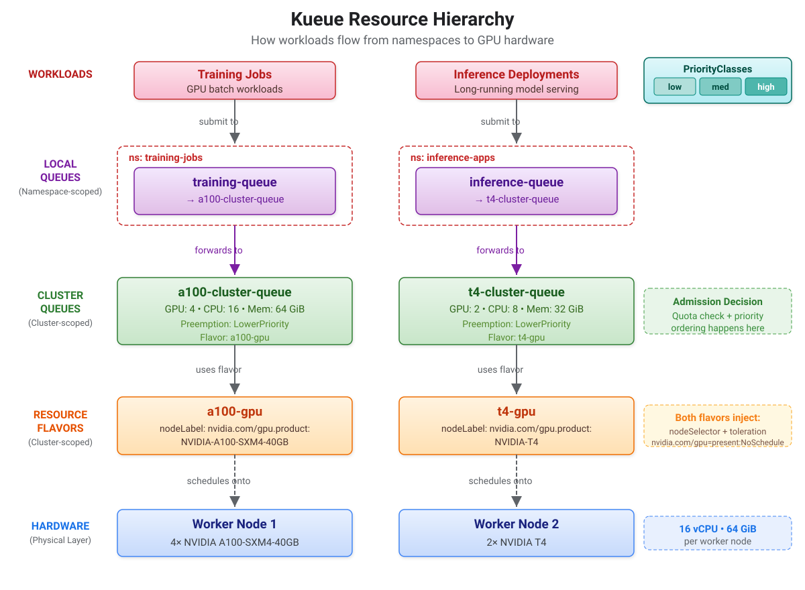

Configure Kueue Resources
With the Kueue operator running, you now create the Kueue resources manually to learn how GPU quota management works.
All YAML files are in the kueue-config/ directory and are applied in order.
What You Will Create
You create five sets of resources, each building on the previous one:
-
Namespaces — Kueue-managed namespaces for training and inference workloads
-
ResourceFlavors — map Kueue quotas to specific GPU hardware on specific nodes
-
ClusterQueues — define cluster-wide GPU, CPU, and memory quotas per GPU type
-
LocalQueues — expose ClusterQueue capacity to specific namespaces
-
WorkloadPriorityClasses — control queueing order and preemption within Kueue
Architecture Overview
The following diagram shows how the Kueue resources connect to form a complete GPU quota management system.
Workloads enter through a LocalQueue, are forwarded to a ClusterQueue for admission and quota checks, and when admitted, the ResourceFlavor injects the correct nodeSelector and tolerations to place pods on the right GPU nodes.
